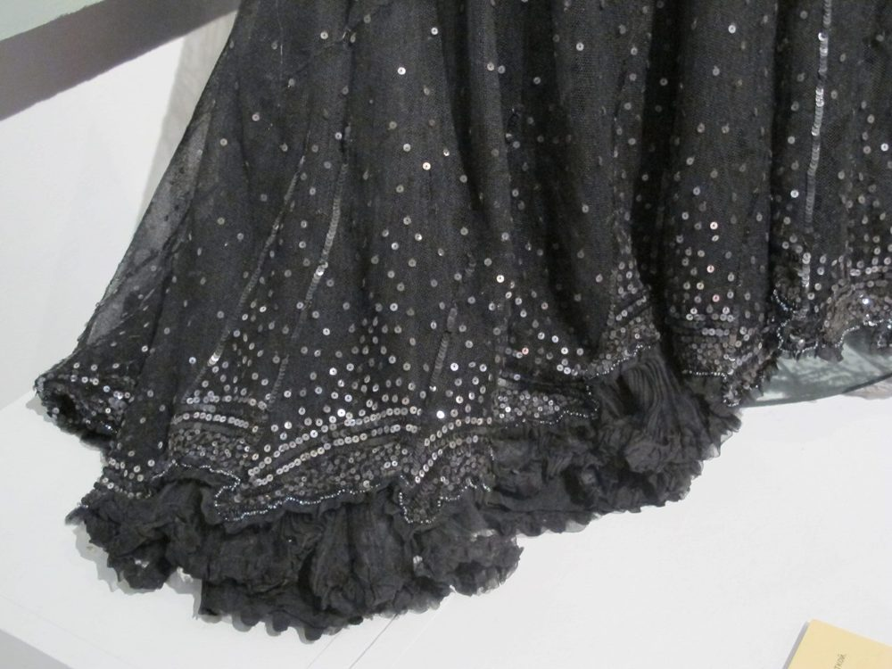
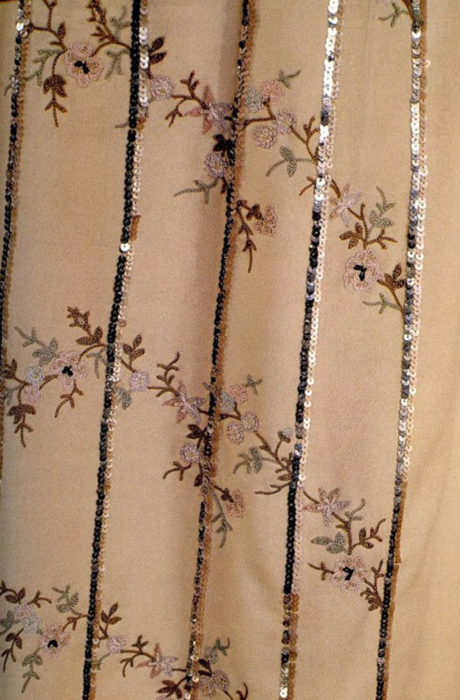

БилетыМеню


Русская Шанель: подиумный показ
26 ноября
Подробнее
26 ноября
Подробнее

Воркшоп по конструированию
5 декабря
Подробнее
5 декабря
Подробнее

Платья начала XX века
Постоянная экспозиция
Экспозиция

Кружево и бисер
Фонд музея
Коллекция

Вышивка и пайетки
Фонд музея
Коллекция
Все экспозицииДобро пожаловать
Чтобы увидеть платья вблизи, нужно прийти в музей
Режим работы и билеты
События
Все событияСмотретьРусская Шанель: подиумный показ
Показ, взрослые
26 ноября 2026, 18:00
 Смотреть
СмотретьОбзор экспозиции хранителем
Обзор, взрослые
Вторник – суббота, 11:00, 14:00 и 17:00
СмотретьВоркшоп по конструированию
Мастер-класс, взрослые
5 декабря 2026, 12:00
Коллекция
 Смотреть
СмотретьПлатье визитное
1896
 Смотреть
СмотретьПлатье вечернее
1900
 Смотреть
СмотретьПлатье с широкими рукавами
1923
 Смотреть
СмотретьПлатье чёрное, с бисером
1912
 Смотреть
СмотретьПлатье розовое
1905
Вся коллекцияПриходите
Режим работы
Вторник – суббота, 11:00–19:00.
Понедельник и воскресенье выходной.
Обзоры в 11:00, 14:00 и 17:00.
Вторник – суббота, 11:00–19:00.
Понедельник и воскресенье выходной.
Обзоры в 11:00, 14:00 и 17:00.
Билеты
Полный 500 ₽, льготный 350 ₽.
Обзор входит в билет.
Полный 500 ₽, льготный 350 ₽.
Обзор входит в билет.
Как нас найти
Нижний Новгород, ул. Сергиевская, д. 8, пом. П2. Остановка «Улица Добролюбова», дальше вверх по Сергиевской до Арт Лофта PARLE.
Как добратьсяНижний Новгород, ул. Сергиевская, д. 8, пом. П2. Остановка «Улица Добролюбова», дальше вверх по Сергиевской до Арт Лофта PARLE.
Связь
+7 (991) 830-12-76
olaparle@yandex.ru
Telegram: t.me/lamanovann
+7 (991) 830-12-76
olaparle@yandex.ru
Telegram: t.me/lamanovann
Частное учреждение культуры «Музей моды и портновского искусства им. Н. П. Ламановой». ИНН/КПП 5260482972/526001001, ОГРН 1225200012674. Входит в Ассоциацию частных и народных музеев России.